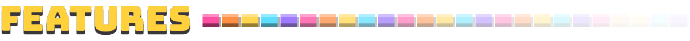
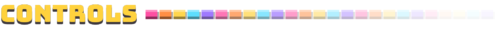
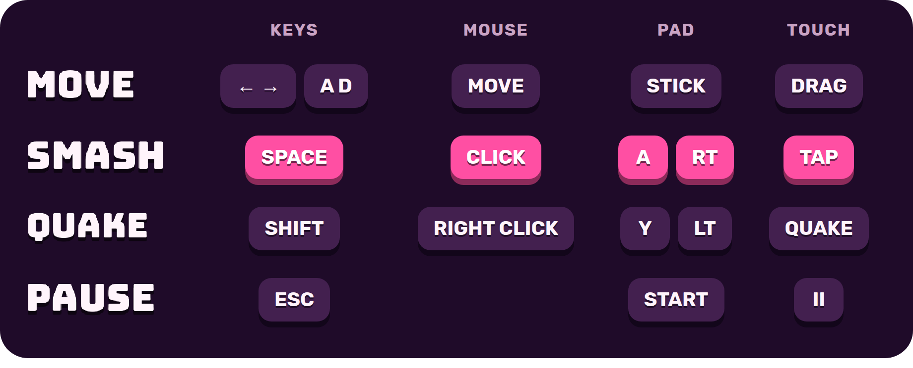
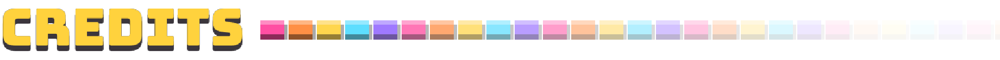

Bring the haus down - before it comes down on you!
Breakhaus is a brick breaker where the wall fights back. The blocks come down a row at a time, on a clock,
and if they ever cross the red line the haus wins. So keep breaking those bottom rows!
The ball never dies though. Let it past your paddle and it just bounces back up - but your combo is gone
and the wall gets a head start on you.
Clear a floor and you crash right through it to the next one. Eight floors from the penthouse down to the
lobby... and then the basements. For ever. How deep can you get?
Hope you like it. :)

- Smash! Hit smash just as the ball lands on the paddle and it flies off glowing, straight through the next three blocks.
- Combos and Fever. Keep breaking for a bigger multiplier, all the way up to x8. Get there and Fever sets in - the balls plough through everything and the whole screen goes rainbow.
- The quake. Charge it up and bring the bottom three rows down at once. Your way out when the wall is at the line.
- 14 pickups. Fireballs, lasers, rockets, multiball, a magnet... and a couple you'll want to dodge. The rare ones come out in a column of gold light. RARE DROP!
- Eight floors. A penthouse, offices, a disco, a library, a kitchen, a greenhouse, an arcade and the lobby, each with its own look and music.
- Three modes. Classic, Rush (three minutes on the clock) and the Daily Haus - the same haus for everyone today, with a twist.


Plays with keyboard, mouse, gamepad or touch.

Made with Godot.
Fonts: Bungee by David Jonathan Ross, and Rubik.
Music and sounds by Ovani Sound.